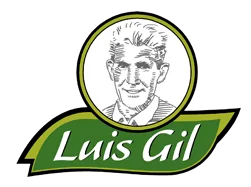
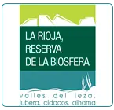
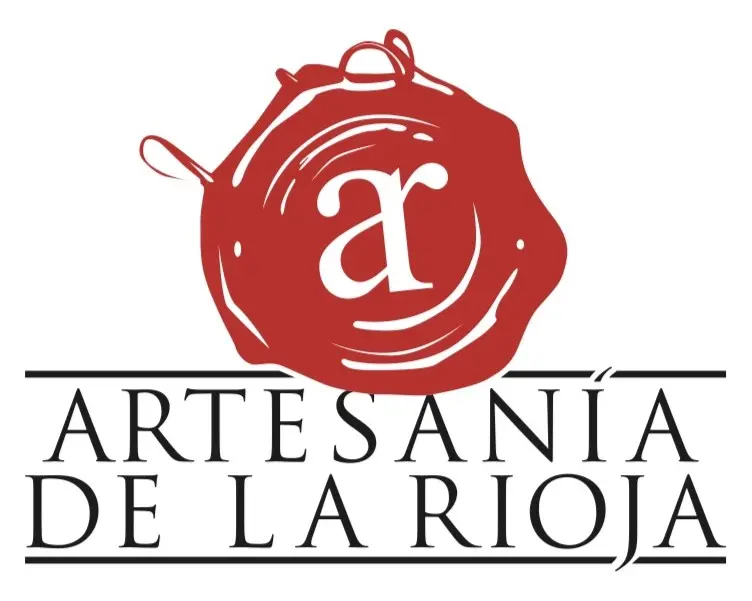
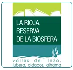
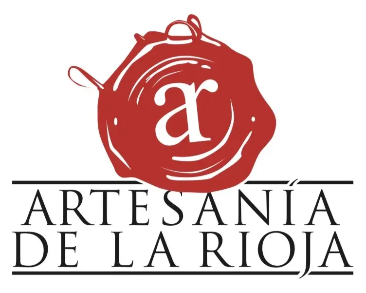

Embutidos Luis Gil
In the Ocón Valley, surrounded by holm oaks and unspoiled nature, the Gil family has been passionately dedicated to livestock farming for four generations. On their estate, El Encinar, they raise Duroc pigs in the wild, in a truly unique setting: La Rioja's Biosphere Reserve. Their organic meats, cured sausages, and hams are the result of this deep respect for the land and their animals.
All their products are certified organic and made only with 100% natural ingredients. There are no shortcuts, just high-quality meat from their own livestock and organically sourced seasonings.
 


